Web Development
On our second lesson, on the 24th of April, we were introduced to HTML, the basic start to creating a webpage.
What is HTML you might ask? HTML also known as HyperText Markup Language, is the language that describes how the information is to be displayed in a web browser. All websites are developed using HTML. They are basically the starting block of a website.
During this lesson we were given different choices of text editors. We were told to try them all out and see which one we prefer. If you do not know, a text editor is program that allows you to open, view, and edit plain text files. Unlike word processors, text editors do not add formatting to text, instead focusing on editing functions for plain text. The choice of text editors is arbitary but there are criterion that you can take note of which can possible help you choose better. Those in which are:
- It produces pure text files
- What you see is what you get
- Simple to use, yet powerful editing features
- Syntax highlighting to show tags/keywords
Here are some recommended Text Editors.
Sublime Text

Sublime Text is one of a popular choice among programmers. It is not free, however, but it has unlimited use time, just like Winrar.
If you are going for this, I recommend checking out a few tutorials below:
Atom
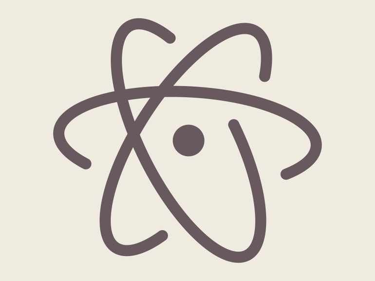Atom, an open source program, is becoming very popular amongst new users due to its easy to use interface. It also has the same functionality as Sublime Text
If you are going for this, I recommend checking out a few tutorials below:
Notepad++
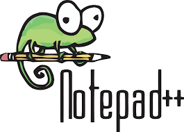Notepad++ is a free source code editor and replaces the traditional Notepad program that all systems should have. It also supports several languages.
If you are going for this, I recommend checking out a few tutorials below:
Brackets

Brackets is an open-source project, included with Inline Editors, where you can open a window into the code you care about most instead of jumping between file tabs. There is also a Live Preview tab where you can get a real-time connection to your browser where you are able to see the changes being done in real-time. My personal choice of text editor is Brackets due to these i guess you can say benefits.
If you are going for this, I recommend checking out a few tutorials below:
- git config --global user.name "John Doe" OR
- git config --global user.email "jdoe1234@example.com"
- Colt Steel Learn Git in 15 Minutes
- Corey Schafer Git Tutorial for Beginners: Command-Line Fundamentals
After we found our preferred text editor, we were told to watch videos on how HTML works.
Use of HTML
Here is a basic structure of HTML:
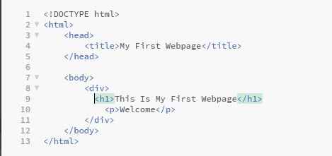
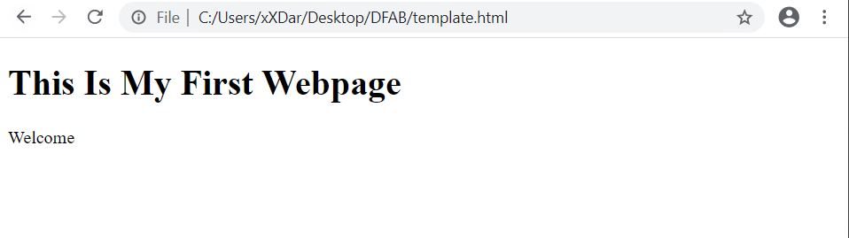
That is just the basics of HTML. To find out more, you can watch Jack Wright's videos Learn HTML in 12 Minutes and Learn More HTML in 12 Minutes. You can also visit W3Schools where you can learn more in depth about HTML. You will also be able to learn about CSS, a method to make your website more appealing.
But just a quick description of CSS, it is basically a language that describes the style of an HTML document and how HTML elements should be displayed. Essentially allowing your website too look more presentable rather than just a blank white canvas with normal texts. To learn more you can visit W3Schools
Web Hosting (4 May)
After we learn how to make our website, we were then taughtt how to actually publish it so that other people are able to see our work. We were introduced to GitHub.
GitHub
It is basically just a website host where we are able to create a repository and upload all the files of our website to make it into a link where other people can use to view your website.
Before anything, you have to first create an account on that website. Once created, headover to your profile and click on Repositories. Once there, you will see a green New button. Click on that to create your new repository.
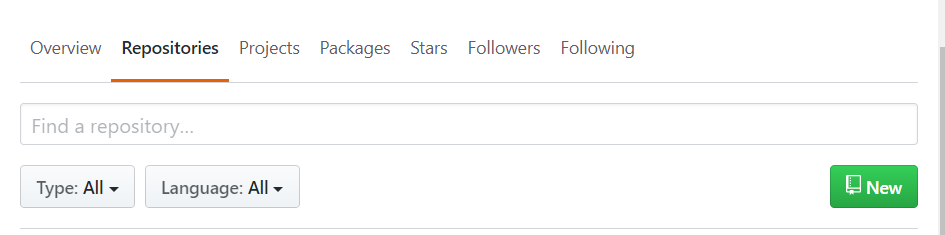
There, you can then give your repository a name. For us, we were instructed to name ours to EP1000, which is our module code. Make sure that it is short and memorable as you need this name at the back of your link to access your website. Also ensure that your repository is public so that everyone will be able to access it. Also ensure that "Initialize this repository with a README" is ticked.
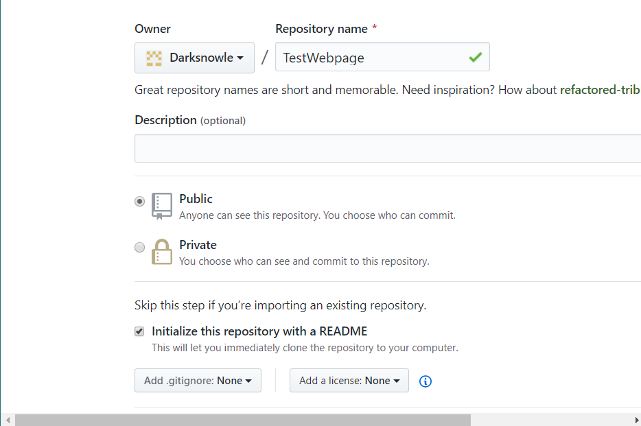
Now that that is done, you can go ahead and create your repository. Once created you can then click on "Upload Files" upload all your files for your website.
IMPORTANT NOTE
Before you are able to create your website for people to see, you first have to go to your "Repository", then click on the "Settings", scroll all the way down until you see "GitHub Pages" and ensure that "Source" is set to "master branch". This will then provide you a link for your website.
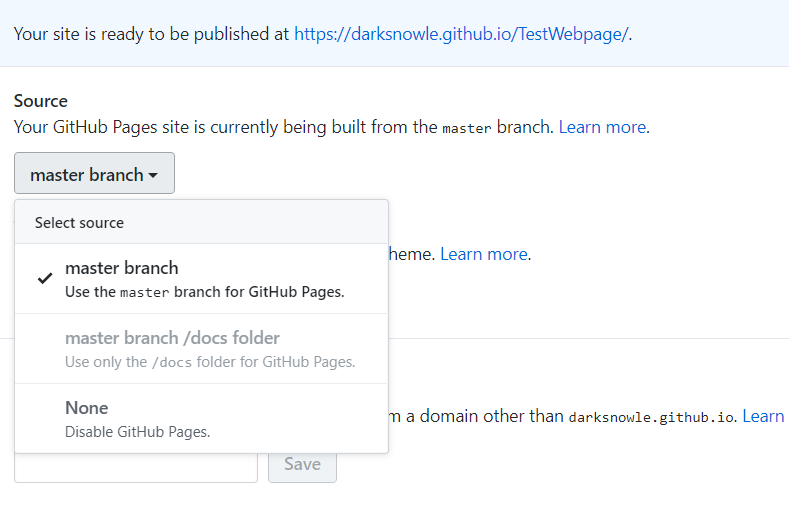Version Control (8 May)
Git
At the heart of GitHub is Git, which is a free and open-source distributed version control system. It is very easy to learn and provides good support for all projects regardless of size. It is also available for different Operating Systems (OS).
Git usually works from the CLI (command-line interface), however there are GUI (Graphic User Interfaces) available, which are easier for the beginner.
It also makes collaborating on a project with a team of different people much easier, where each member work on a version of the project.
Before we use git, we usually need to identify ourselves to git and to the repository. The command to that is:
It is essential for you to provide your credentials to the remote repository so that you can access your account.
Here are a few main git commands and its different purposes:
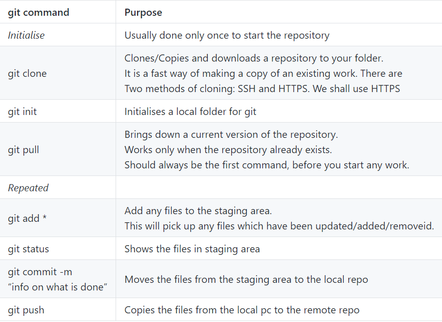There are other commands but these are the only important ones for now.
Tutorials on git:
GitHub Desktop
There is also a simpler interface called GitHub Desktop. It is basically the same as Git and GitHub but you are able to do it offline. I also feel like it is easier to use than normal Git Bash.
You can learn more about GitHub Desktop below:
Dr. Rafeeq Learn how to use Github Desktop 2019
Heres a quick rundown on GitHub Desktop:
You first have to link your GitHub Desktop account with your web Github account. Once that is done, you can use the git clone feature so that you are able to clone any repositories you had on your github account. This will allow you to clone and save the files of your repository to your system. You should see this page when you want to clone as shown below:
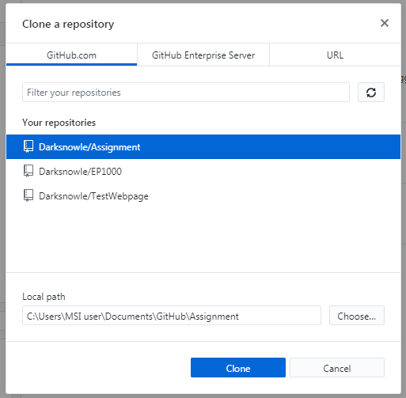Click to enlarge
You can then start editting and it will be stored by the software, in the staging area. Once you are done editing, you now would like to publish it to your GitHub. You can simply do so by going back to GitHub Desktop, write down your "Summary" which is basically the dits that you made, and click on commit to master. As you recall, commiting to master is just moving the files that you just editted from the staging area to the local repo. In order for you to actually see the changes you made, you have to click on the "Push origin" button, which is essentially the git push command.
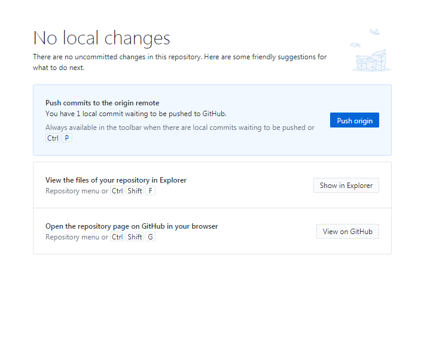Click to enlarge
Reverting Changes
Now, there may be times where you changed your mind on the changes that you made or you could not remember the changes that you did and you want to retrieve your original codes. Lets say from the example shown below (red being the previously saved text and green being the new one), I changed my text from "life is good" to "life is bad".
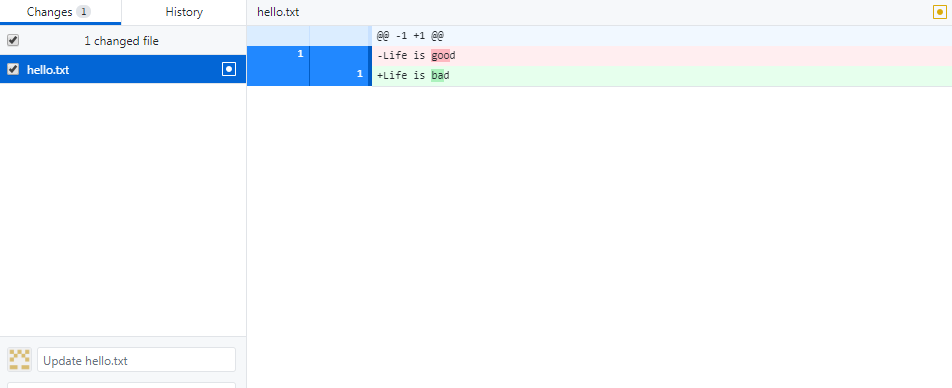Click to enlarge
This is what my current text looks like.
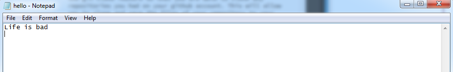Click to enlarge
Now, imagine that you only saved it and did not commit to master. You come back to continue working on your project but then you decided that you want "life is good" back. What can you do? The simple answer to that is you simple right click on the changed file and discard changes. This will basically revert back to your last commit, which is "life is good" for my case. Once discarded, if you reopen your text editor, you will see that it will revert back to the previous text that you committed.
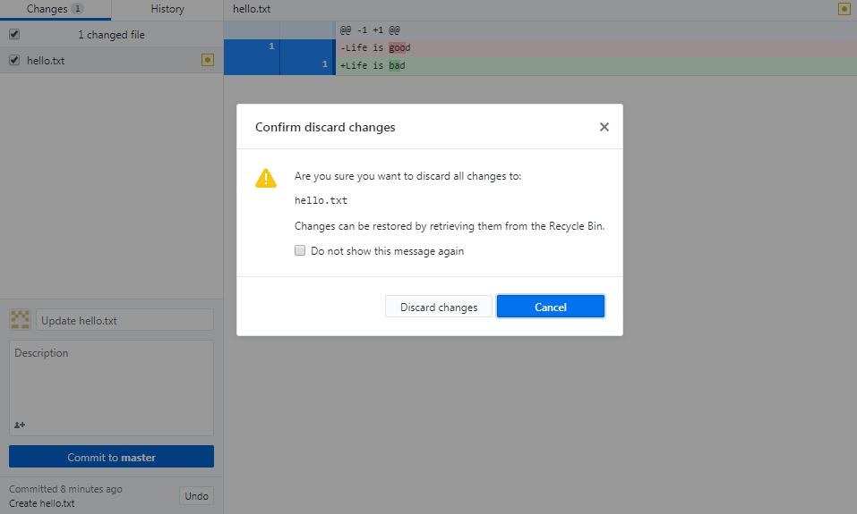Click to enlarge
This is what my text looks like after reverting it back
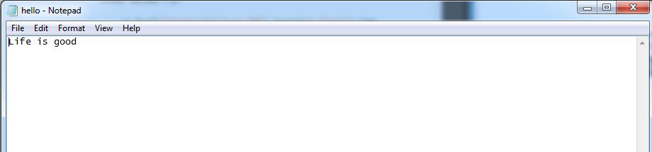Click to enlarge
Now lets say that you actually committed the "life is bad" text. As you can see now you will not be able to discard any changes as you have already committed it to the master. What you simply have to do is click on the "History" tab instead of changes. Now you will see all the different changes that you have made. Click on the updated commit that you did previously and simply right click it and click on revert. Once that is done you will see a new tab, in my case it is "Revert "Update hello.txt.". This means that all the changes that you have committed has been reverted back to the previous commit. If you were to look back at your file. It should show your previous text.
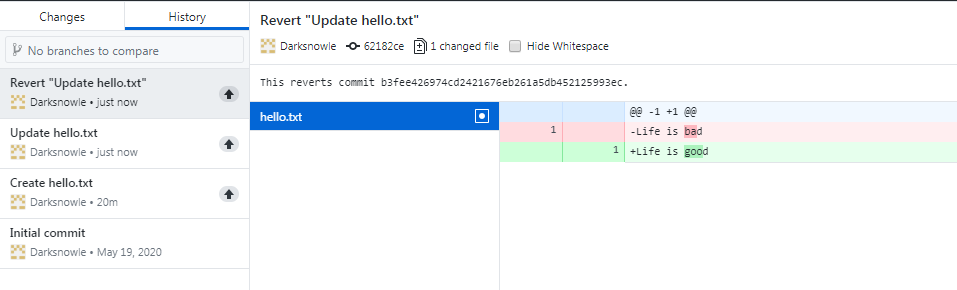